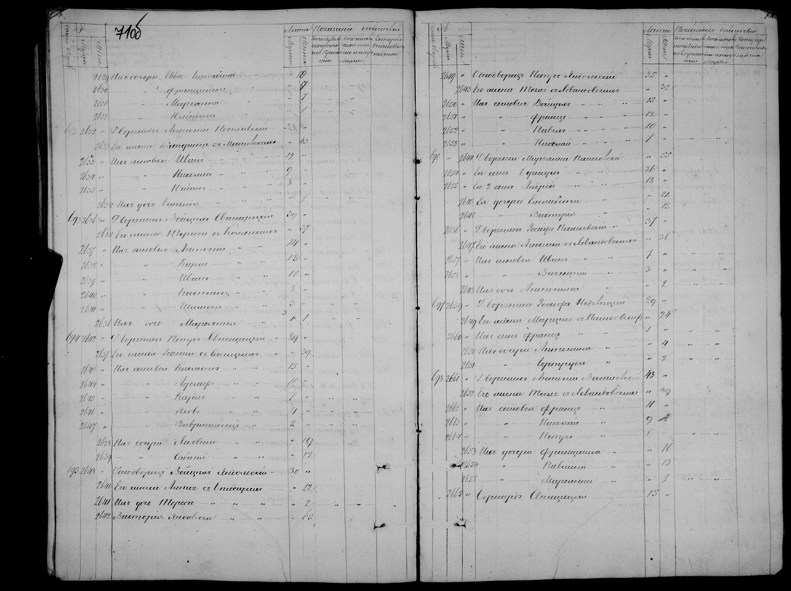
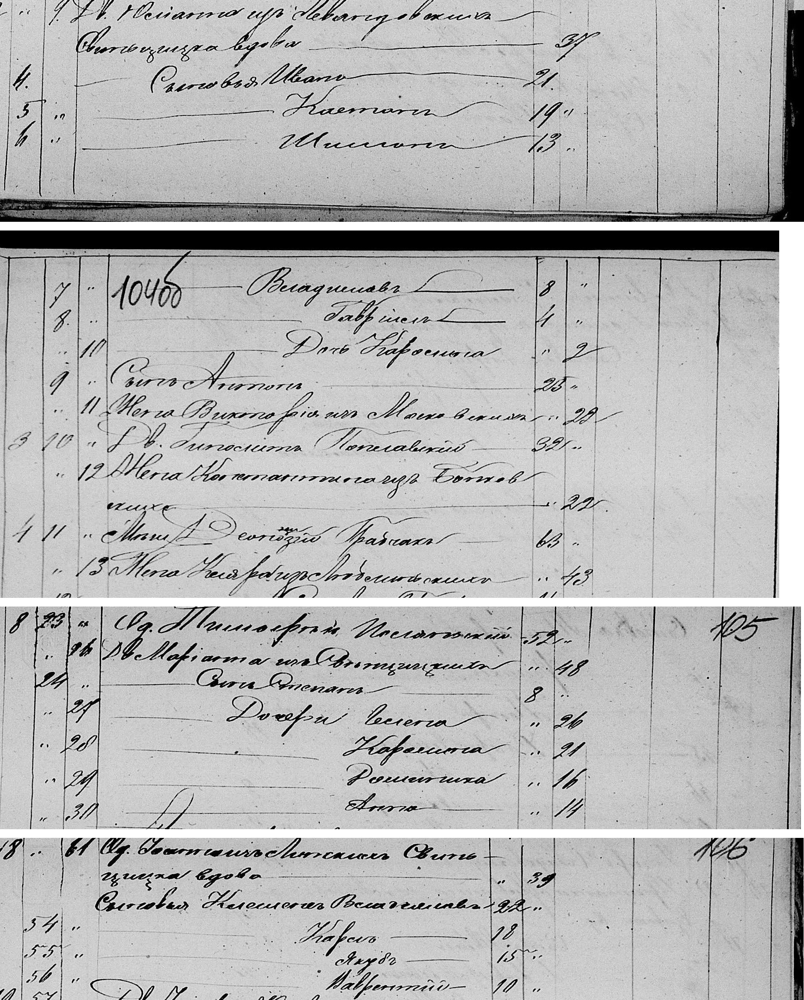
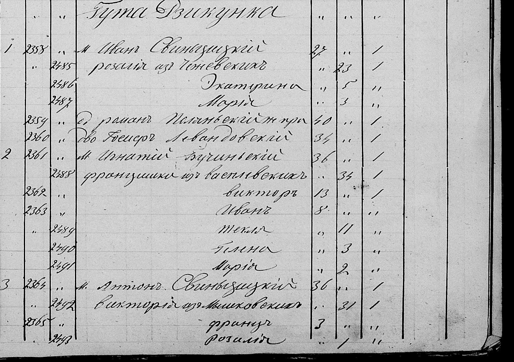
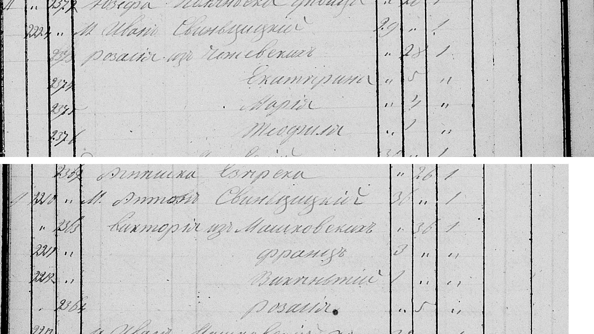
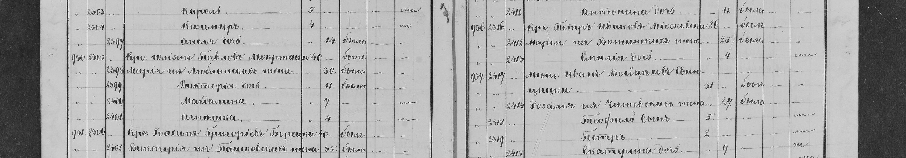
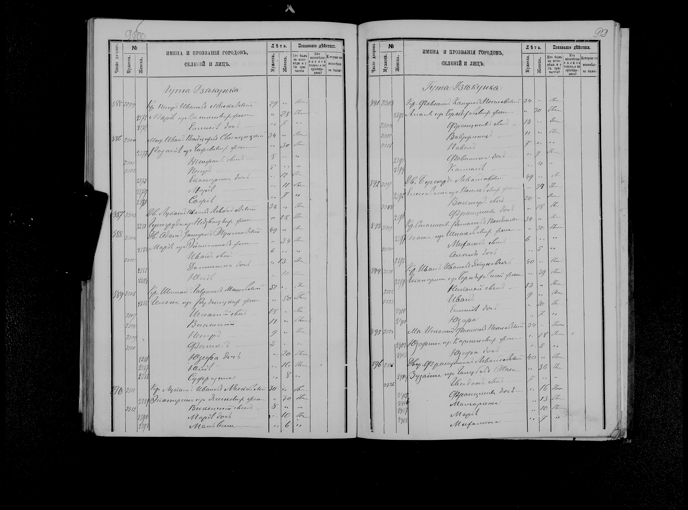
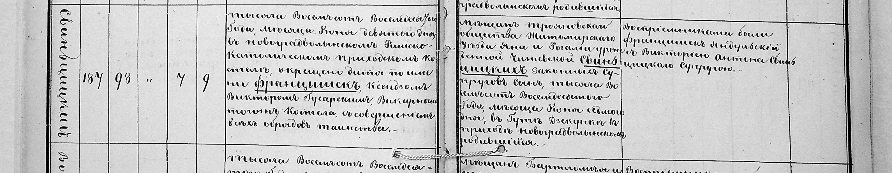
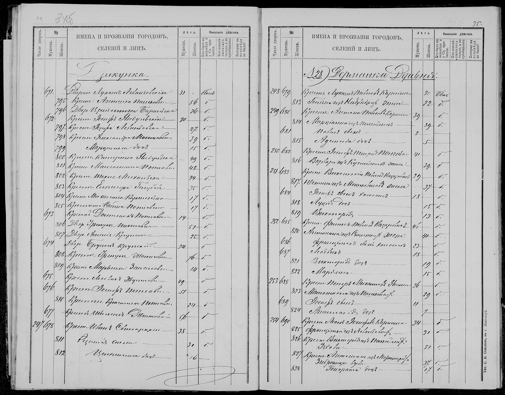
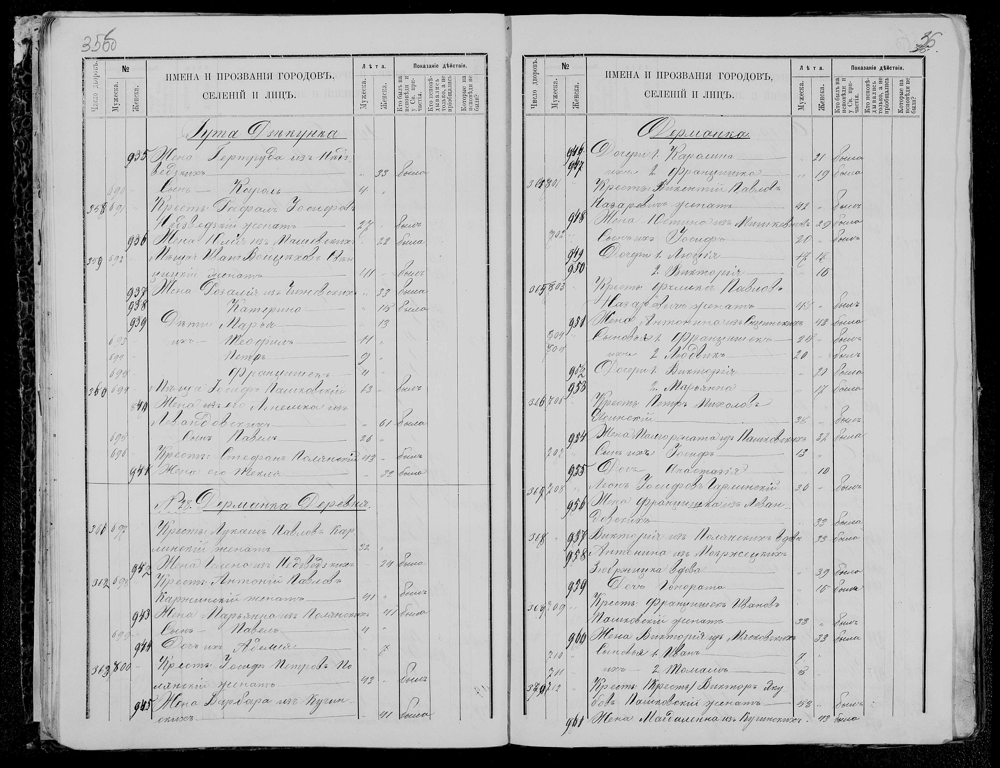
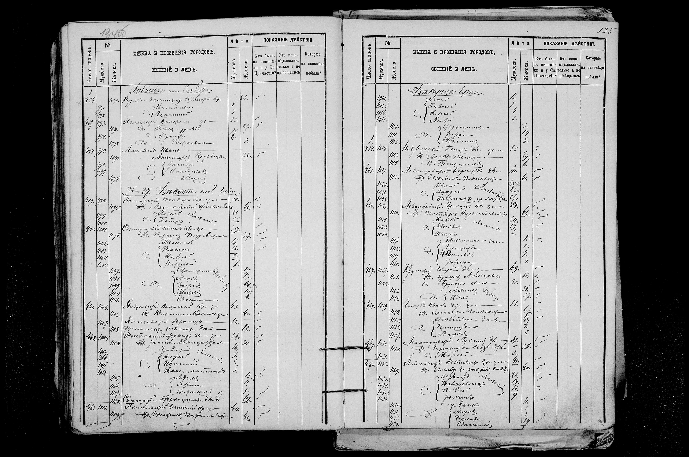

Ян Свінціцький¶
Родина¶
Маріанна Свінціцькан. 1865 Теофіль Свінціцький1869–1925 Кароль Іванович Свінцицький1876–1938 Францішек Свінціцькийн. 1880 Евелина Свѣнцицкаян. 1882 Екатерина Свинцицкаяроки невідомі Зофія Свинцицкаяроки невідомі Казимир Свинцицкийроки невідомі Марія Свиньцицкаяроки невідомі Маріянна Свинцицкаяроки невідомі Николай Свинцицкийроки невідомі Петр Свинцицкийроки невідомі Софія Свинцицкаяроки невідомі Текла Свинцицкаяроки невідомі
Гіпотетичні зв'язки¶
Не верифіковано джерелом: виведено з прізвища, хронології або суміжних згадок.
Гіпотези¶
Кароль Іванович 1876 р. н. () — син Яна й Розалії з Чижевських () і брат Феофіла, а не брат Константина (сина Яна й Марцеліни з Багинських)Закрита · H0020 Дворянин Войцех Свінціцький, 39 р. у 1854 (Дзикунка, двір 693), — це Войцех, батько Антона й Івана, але його дружина в розписі 1854 — Тереза (дівоче прізвище не прочитано) (), а в каноні — Юліана...Відкрита — шукаємо · H0022 Иванъ Свиньцицкій 20 р. (двір 11, Слобода Чернігівка, розпис 1869;) — Іван з Дзикунки (68 у 1907 і 69 у 1912, тобто нар. ≈1839–1843) або Іван Войцехович (27 у 1869, нар. ≈1842)Відкрита — шукаємо · H0026 Jan syn Wojciecha Swiniecki 64 і Julja z Jędrzejewskich 54 (Слобода Чернецька, польський розпис 1883–84, 1045-2-702 скан 0681; діти Franciszek 29, Maryanna 22, Justyna 19, Józefa 12) — це Іван 50...Закрита · H0028 Jan syn Aleksandra Swiniecki 56 з Anna z Jełanowskich(?) 46 (польський розпис 1883–84, 1045-2-702 скан 0644) — не відомий у каноні Ян; чи це брат або син Олександра зі списків 1802–1865Відкрита — шукаємо · H0031 Захарій (Zachariasz) Свѣнцицкій — одна особа в 1045-2-689 (1871–72, скан 0563: «Янъ Дворян. Захаріашъ Свенцицкій въ Немылянкѣ») і 1045-2-696 (скан 0876: «Захаріямъ Мѣщ. Свѣнцицкій въ Острожску»)Відкрита — шукаємо · H0033 Жінки, уроджені Свінціцькі, що народжували дітей 1883–1900: Франциска (Франц, 1898), Анна (Франц Іжевський, 1899), Текла (Франц Ясиневич, 1899), Марія (Степан Кучинський, 1900), Єлисавета (Генріх...Відкрита — шукаємо · H0034 Записи хрещень 1866–1868 у ДАЖО 178-3-150 (Новоград-Волинський костел) доповнюють діти трьох родин Свінціцьких: Іосиф (14.02.1868) і Текля (29.11.1868) — діти Яна і Марцеліни; Юліан (10.04.1868) —...Відкрита — шукаємо · H0040 Нові Свінціцькі-згадки в ДАЖО 178-3-158 (1875–1877): Іоанна з Свінціцьких Жултовська (дочка Ядвіга 1875), Юстина з Свінціцьких Ковальська (дочка Ядвіга 1876) і воспріємник Ян Свѣнцицкій 1877...Відкрита — шукаємо · H0041 Записи хрещень 1863–1869 у ДАЖО 178-3-150 (Новоград-Волинський костел) з прізвищем Свѣнцицкій — діти й воспріємники ще не зв'язаних родин: Казимир і Маріанна з Яндольських (Гута Середня), Антоній...Відкрита — шукаємо · H0042
Життя¶
-
1854
Місце проживання · с. Дзикунка1 · гіпотеза
Гута Дзикунка, двір 693, сповідний розпис 1854: син Іван, 10 р. (≈1844 р.н.), у родині дворянина Войцеха й Терези (дівоче прізвище не прочитано)

-
1863
Місце проживання · с. Дзикунка2 · гіпотеза
Гута Дзикунка, сповідний розпис 1863: двір 2, у домі вдови Юліани: син Иванъ 21 (1869 — 27, 1870 — 29)

-
1869
Місце проживання · с. Дзикунка3 · гіпотеза
Гута Дзикунка, сповідний розпис 1869: Іван, 27 р., двір 1 у Гуті Дзикунці (вік 27)

-
1870
Місце проживання · с. Дзикунка4 · гіпотеза
Гута Дзикунка, сповідний розпис 1870: двір Івана Свиньцицкого: Иванъ 29 (вік 29)

-
1873
Місце проживання · с. Дзикунка5 · гіпотеза
Гута Дзикунка, сповідний розпис 1873: двір 917: Иванъ Свинцицкій 30 (1869 — 27, 1870 — 29)

-
1874
Місце проживання · с. Дзикунка6 · гіпотеза
Гута Дзикунка, сповідальний розпис Новоград-Волинського костелу, двір 937, №2317: «Мѣщ: Иванъ Войцѣховъ Свинцицки» 31, жена Розалія з Читевських (Чижевських) 27; син Теофіл 5, Петро 2, дочка Катерина 9

-
1877
Місце проживання · с. Дзикунка7
Гута Дзикунка, двір 886, сповідний розпис 1877: Іван Войцехович, міщанин, 34 р. (≈1843 р.н.); жінка Розалія з Чижевських 30; сини Феофіл 8, Петро 5; доньки Катерина 12, Марія 11, Софія 4

-
1880
Місце проживання · с. Дзикунка8
Гута Дзикунка; міщанин Трояновського товариства Житомирського повіту

-
1881
Місце проживання · с. Дзикунка9 · гіпотеза
Дзикунка, сповідний розпис 1881 (двір 247): «Иванъ Свенцицкій» 38, селянин; жінка Розалія 31; дочка 16 (ім'я нечітке)

-
1883
Місце проживання · с. Дзикунка10
Дзикунка Гута, двір 692, сповідний розпис 1883: Іван Войцехович (син Войцеха), міщанин, жонатий, 41 р.; жінка Розалія з Чижевських 33; діти Катерина 15, Марья 13, Теофіл 11, Петро 9, Францишек 4

-
між 1884 – 1885
Місце проживання · с. Дзикунка11
Дзикунка Гута, двір 473, сповідний розпис 1884–1885: «Янъ м. Трояновск. об.» (вік 45; у копії 2 розділу, скан 0883), жінка Розалія з Чижевських 40; сини Феофіл 13, Петро 11, Кароль 6; доньки Катерина 16, Маріанна 14, [Зофія?] 7, [Текла?] 4, Евелина 2


-
1886
Місце проживання · с. Дзикунка12
Дзикунка Гута, двір 460, сповідний розпис 1886: Ян (Іван), глава двору, вік читається 39? (нечітко; у 1884–85 було 45); жінка Розалія з Чижевських; сини Феофіл, Петро, Кароль, Миколай; доньки Катерина, Марія, Зофія?, Текла, Евелина



Імена в джерелах¶
- Ян Свінціцький uk
- Янъ Свѣнцицкій ru
- Иванъ Свинцицкій ru
- Иванъ Свиньцицкій ru
Документи¶
Медіа¶
- ЦДІАК 1045-1-162, скан 0099, двір 937 — Іван Войцехович Свинцицки, Розалія з Читевських, діти — локальне фото
11745e76a4c9… - ДАЖО 178-3-166, скан 0049, рядок 106 — хрещення Францішека, сина Яна й Розалії з Чижевських, 1880 — локальне фото
f312569ecde8… - ЦДІАК 1045-2-703, скан 0748 (цілий розворот) — Дзикунка Гута: двір 473 Ян м. Трояновського общ. з Розалією з Чижевських і діти; 1884–85 — локальне фото
177d1a89f63b… - ЦДІАК 1045-2-703, скан 0883 (цілий розворот, копія 2 розділу «Дзѣкунка Гута») — двори 464, 471, 473: Антон з Вікторією, Пашковський з Леонтиною, Ян з Розалією, 1884–85 — локальне фото
bfd9d0abcc25… - ЦДІАК 1045-2-704, скан 0142 (цілий розворот) — Дзикунка Гута: двір 460 Ян з Розалією з Чижевських і діти; двір 462 Толтовський з Іоанною зі Свінціцьких; 1886 — локальне фото
55cee2d48bc2… - ЦДІАК 1045-2-700, скан 0280 (цілий розворот) — Дзикунка, двір 247: Іван Свінціцький 38, Розалія 31, дочка 16; 1881 — локальне фото
33f0f15faefb… - ЦДІАК 1045-2-701, скан 0426 (цілий розворот) — Дзикунка Гута, двір 692: Іван Войцехович Свінціцький 41 з Розалією з Чижевських і діти; 1883 — локальне фото
55ee808286d2… - ЦДІАК 1045-2-296, скан 0505 (цілий розворот) — Гута Дзѣкунка, двір 886: Іван Войцехович Свінціцький 34 з Розалією з Чижевських і діти; 1877 — локальне фото
ff82dd04c33c… - ЦДІАК 1045-2-244, скан 0075 (цілий розворот) — Гута Дзікунка: двір 693 дворянин Войцех Свінціцький 39 з Терезою (дівоче прізвище не прочитано) і діти; двір 694 дворянин Петро Свінціцький з Іоанною і діти; 1854 — локальне фото
70fdbc6cc5da… - ЦДІАК 1045-2-274, скан 0375 — Гута Дзикунка 1869, двори 1 і 3: Іван і Антон Свіньцицькі — локальне фото
1efbbd9eabd9… - ЦДІАК 1045-2-275, скан 0459 — Гута Дзикунка 1870: двори Івана й Антона Свіньцицьких — локальне фото
7b596545e037…
Нотатки¶
Чоловік Розалії з Чижевських Розалія Чижевська, батько Францішека 1880 Францішек Свінціцький і доньки 1882 Евелина Свѣнцицкая (F0070). Міщани Трояновського товариства Житомирського повіту, Гута Дзикунка.
НЕ НАШ РІД — рішення дослідника 2026-10-10. Внесено окремою особою, щоб не плутати з Яном (Іваном) Ян Свінціцький і Марцеліною з Багинських Марцеліна Свінціцька (батьки Константина Константин Свинцицкий): це інша пара з тієї самої Дзикунки й того самого Трояновського товариства.
Імовірно, це той самий Ян, який 1864 р. узяв шлюб із Розалією Чижевською (ДАЖО 178-3-152 №21, згадано в Іван Свінціцький), і чия донька Катерина хрещена 1865 в Дзикунці (ДАЖО 178-3-150 №149, див. Ян Свінціцький). Ці два записи в цій картці не прочитано й документом не зв'язано.
У сповідному розписі 1884–85 (ЦДІАК 1045-2-703, скан 0748, двір 473) записаний з жінкою Розалією з Чижевських і вісьмома дітьми, серед яких Феофіл Теофіль Свінціцький, Петро Петр Свинцицкий, Кароль 6 (можливо Кароль Іванович Свінцицький, H0020), Евелина Евелина Свѣнцицкая.
Син Войцеха Войцех Свенцицкій і Юліани з Левандовських Юліяна Левандовская (F0071) за рішенням дослідника 2026-11-10 (по батькові «Войцехович» у сповідному розписі 1883, ЦДІАК 1045-2-701, Дзикунка Гута; брат Антона Антон Свінціцький).
Додано з розпису 1869 (ЦДІАК 1045-2-274, скан 0375), внесено за вказівкою дослідника: Іван 27 р. у розписі 1869, Гута Дзикунка, двір 1. Тотожність за рішенням дослідника 2026-11-17.
-
Сповідний розпис римо-католиків Новоград-Волинського костелу, 1854 ↩
-
Сповідний розпис римо-католиків Новоград-Волинського костелу, 1863 ↩
-
Сповідний розпис римо-католиків Новоград-Волинського костелу, 1869 ↩
-
Сповідний розпис римо-католиків Новоград-Волинського костелу, 1870 ↩
-
Сповідний розпис римо-католиків Новоград-Волинського костелу, 1873 ↩
-
Сповідальний розпис парафіян Новоград-Волинського римо-католицького костелу 1874 р. ↩
-
Сповідний розпис римо-католиків Новоград-Волинського костелу, 1877 ↩
-
Метричні книги Новоград-Волинського римо-католицького костелу, 1880–1885 (народження) ↩
-
Сповідний розпис римо-католиків Новоград-Волинського костелу, 1881 (в описі — «Метрична книга»?) ↩
-
Сповідний розпис римо-католиків Новоград-Волинського костелу, 1883 (в описі — «Метрична книга Новоград-Волинського костелу») ↩
-
Сповідні розписи римо-католиків Новоград-Волинського костела за 1884–1885 рр. ↩
-
Сповідний розпис римо-католиків Новоград-Волинського повіту (Новоград-Волинський костел), 1886 ↩